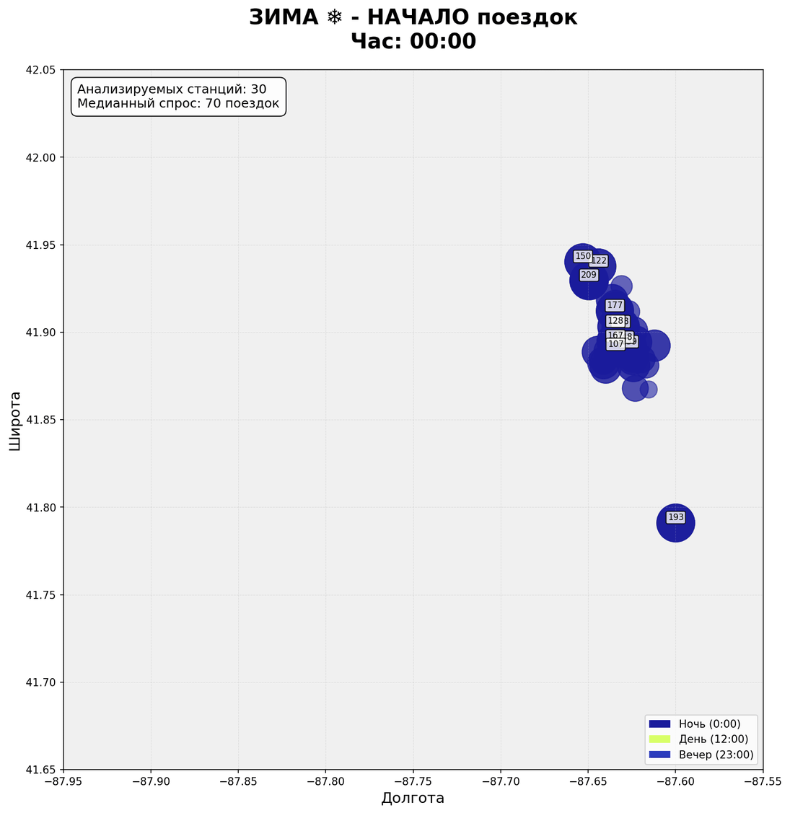
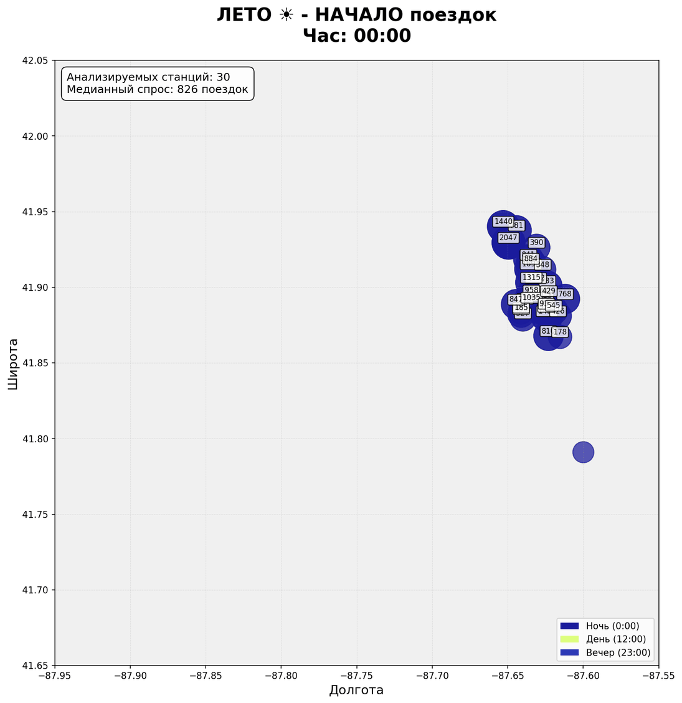
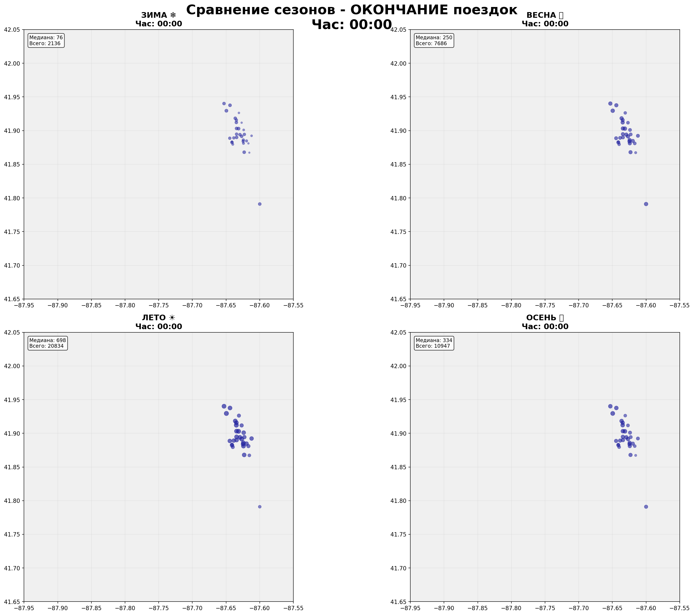

🚲 Divvy Bikes Chicago - Анализ часового спроса по сезонам
Медианный анализ спроса на топ-30 станциях с разбивкой по 24 часам и 4 сезонам
📊 Методология анализа:
- Выборка данных: Топ-30 самых популярных станций за 2020-2025 гг.
- Сезонность: Разделение на 4 сезона (зима, весна, лето, осень)
- Временной анализ: 24 часа суток (0:00 - 23:00)
- Агрегация: Медианное количество поездок в каждый час
- Робастность: Использование медианы вместо среднего для устойчивости к выбросам
- Визуализация: Размер круга пропорционален логарифму количества поездок
🎬 Анимации часового спроса по сезонам
Каждая анимация показывает изменение спроса в течение суток для конкретного сезона
❄️ ЗИМА - Начало поездок
❄️ ЗИМА - Окончание поездок

☀️ ЛЕТО - Начало поездок
☀️ ЛЕТО - Окончание поездок

🔄 Сравнение сезонов
Сравнение всех 4 сезонов для каждого часа суток
Сравнение - Начало поездок

4 сезона на одном экране
Сравнение - Окончание поездок
4 сезона на одном экране
📈 Ключевые инсайты
| Наблюдение | Зима | Лето | Интерпретация |
|---|---|---|---|
| Утренний пик (7:00-9:00) | Более поздний и слабый | Ранний и интенсивный | Зимой люди начинают позже из-за холода |
| Вечерний пик (17:00-19:00) | Более ранний | Более поздний | Летом люди дольше остаются на улице |
| Дневной спрос (12:00-16:00) | Низкий | Высокий | Летом активный туристический спрос |
| Ночной спрос (22:00-6:00) | Практически нулевой | Низкий, но есть | Летом ночная жизнь активнее |
🔍 Аналитические выводы
1. Сезонные паттерны:
- Зима: Концентрированный спрос в часы пик, минимальная активность в остальное время
- Лето: Распределенный спрос в течение всего дня, включая вечерние часы
- Весна/Осень: Переходные паттерны между зимой и летом
2. Рекомендации для оператора:
- Перераспределение велосипедов: Учитывать сезонные и часовые пики
- Обслуживание: Планировать ремонт в периоды низкого спроса
- Ценообразование: Динамическое ценообразование в часы пик
- Маркетинг: Сезонные промо-акции для сглаживания спроса
📊 Технические детали
| Параметр | Значение | Обоснование |
|---|---|---|
| Количество станций | 30 | Топ по общему количеству поездок |
| Период анализа | 2020-2025 | 6 лет для репрезентативности |
| Агрегация | Медиана | Робастность к выбросам |
| Временное разрешение | 1 час | Достаточно для анализа суточных паттернов |
| Сезоны | 4 | Зима, Весна, Лето, Осень |